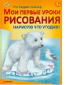

Малыши любят с гордостью демонстрировать свои произведения со словами "Смотри, что я нарисовал!" Немного простых уроков, и любой ребенок сможет нарисовать практически что угодно: симпатичную зверюшку, веселого клоуна, красавицу-фею или автокран, стоит только захотеть. Цветными карандашами рисовать легко и весело, особенно если родители немножко помогут. Немецкая художница и автор популярных детских книг о рисовании Уте Людвиг-Кайзер расскажет, с чего начать и как научиться рисовать все, на что хватит детской фантазии.